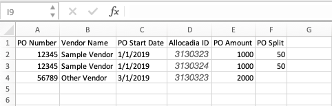

Create Purchase Orders (POs) by importing
When you order services, your purchasing department might compile the purchase order data into an external file, such as an Excel spreadsheet. To easily compare your forecast with these purchase orders, you can import the file directly into the system rather than entering the POs manually.
Preparing the import spreadsheet
First Row: Your first row must have headers. If there is a blank row you will be prompted to add the headers prior to import. Duplicate header names will not be accepted.
Rows: Empty rows will not be accepted and you will be prompted to delete them.
Columns: You can keep columns you don't want to import into your spreadsheet and ignore them during the mapping process, saving you time in prepping your sheet for import.
Date Formats: Choose one date column as your primary date column. This is the date format that you will use in reporting. If amortizing POs, start dates can't be after end date.
Worksheets: The worksheet that you are importing must be the first tab in the workbook.
Linked Spreadsheets: Linked spreadsheets in your file will cause an error, remove these before importing.
If there are linked spreadsheets within your file it will result in the upload screen cycling, please refresh your screen and log back in.
Multi-select fields: The import recognizes Option, %, as one option in the multi-select field. Several options have to be separated by ::. For example, you can enter in a multi-select column Brand Awareness, 50.0::Lead Generation, 50.0. However, the multi-select field allocations must equal 100%, otherwise the import will fail.
Notes for splitting or amortizing POs
If you need to split POs then include a PO Split column to indicate the split percentage for each PO. Enter percentage for each split, but ensure your split percentages for one split PO total exactly to 100 %. Do not include the percent symbol.
Note: If there is a PO on the imported spreadsheet NOT being split, the PO Split column can be empty for that line.Ensure all other fields are identical for each line of the PO Split such as PO Amount, Vendor Name, Start and End Date, etc. Be aware that the PO Amount value must represent the 100 % value, not the value of the split.

If you want to amortize POs, then include a column with an end date. The column will be empty for POs that are not amortized.
Handling duplicates
When importing data, the Excel file may contain duplicates. The import allows you to effectively handle the following situations:
You are sure that none of the records in the Excel file is a duplicate. This will be especially the case when you import the records for a period for the first time.
You know that the file contains or may contain duplicates. You then need to determine which fields are used to detect the duplicates, or whether all fields must match for records to be detected as duplicates.
If you know that the file contains duplicates and all fields are identical, then you can ignore these duplicates and leave the records in the system untouched.
If duplicates are detected based on selected fields, you can decide whether to ignore the data in the Excel file or to update the records in the system. To update is helpful when data like Amount changed externally and you want to adjust the data in the system accordingly.
Import Purchase Orders (POs)
Import POs into Uptempo
In the
 Budgets section, click Import and select POs.
Budgets section, click Import and select POs.On the Import window, click the Import Location drop-down menu and select the folder, sub-folder or investment plan that you would like to import into.
Click Browse to choose the file to import.
If you have prepared a template, click the Choose import template drop-down menu to select your desired template for this import. For more information see Import templates.
Click Next. The Assign Fields step is displayed.
Assign fields and match your spreadsheet column headers to the associated import fields by selecting from the menu.
To allow a correct assignment to the month, select the used format of the date cell in the imported file.
If the file contains POs with start and end date and the PO amount should be split across the date range, activate the Amortize POs checkbox. After importing, POs will be equally allocated to the chosen date range.
Optional: If the file contains POs to be split, select the Split POs checkbox.
In the PO Identifiers field, select the columns of your import file that you use to identify the POs to be split. The same values must be entered in these columns for each split of a PO.
In the Split Percentage Field, select the column that contains the percentages of the splits.
Click Next. The Manage Duplicates step is displayed.
Specify how the import will handle duplicates:
You are sure that none of the records in the Excel file is a duplicate. This will be especially the case when you import POs for a period for the first time:
Select Allow duplicates. The file will not be checked for duplicates. A PO will be created for every mapped record.
You want to replace records that are identical in some fields:
Select Match using specific spreadsheet field(s).
Select Replace existing items with matches.
On the right side, select the fields that the import will use to detect duplicates. Duplicates are detected based on the fields selected in this step and replaced during import.
You want to filter the records that are identical in some fields and ignore them during import:
Select Match using specific spreadsheet field(s).
Deselect Replace existing items with matches.
On the right side, select the fields that the import will use to detect duplicates. Duplicates are detected based on the fields selected in this step and ignored during import.
You want to filter the records that are identical in all fields and ignore them during import:
Select Match using all spreadsheet fields. Data records in the file whose field values equal all assigned fields in the system will be ignored during import.
Click Next. The Map Import Data step is displayed.
Specify how to identify the line items for which the POs are to be created:
In the Spreadsheet field, select the column in your file that identifies the line item.
In Uptempo Field, specify with which attribute of the line item the matching takes place.
In many cases the Spreadsheet and Uptempo fields contain identical values. In such cases, leave the default entry (.*) in the Unique ID field regular expression field.
For more complex relationships use a regular expression, see Import data.
Click Apply Unique Rule. The rule is applied.
Switch to the Review Applied Rules tab.
Check how the rule was applied and if the line items were mapped correctly.
If the mapping is not correct, go to step 13 and repeat the line item identification.
Click the Action button and select Import from the drop-down sub-menu.
For more information on the Import and Save Template As option in the dropdown see Create import templates. The data is imported. After import, the Review Import step is displayed.Check whether data was imported as you expected.
Click Done.
You have created POs via import. You can review which items in your spreadsheet were mapped, left unmapped, or considered duplicates by clicking the Import History icon in the  Budgets section in line with the folder, sub-folder or investment plan that you imported into.
Budgets section in line with the folder, sub-folder or investment plan that you imported into.